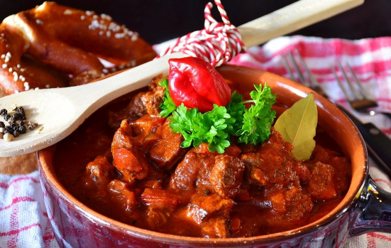

Recept na vepřový Chalupářský guláš

Potřebné ingredience
| Cibule |
3 |
| Stroužky česneku |
3 |
| Vepřová plec |
1kg |
| Lžicka soli |
1 |
| Lžička pepře |
1 |
| Lžíce sádla |
2 |
| Rajčatový protlak |
70g |
| Lžíce sladké červené papriky |
1 |
| Voda |
700ml |
| Kostka zeleninového bujónu |
1 |
| Snítka čerstvého tymiánu |
5 |
| Lžička majoránky |
1 |
| Lžička drceného knínu |
1 |
| Chléb |
1 |
| Jarní cibulka |
2 |
Postup
- Oloupejte 3 cibule a 3 stroužky česneku a najemno je nakrájejte. Nakrájejte 1 kg vepřové plece na kostky, osolte je a opepřete.
- V hrnci na rozehřátém sádle orestujte dohněda cibuli. Přidejte maso a nechte ho zatáhnout. Přisypte česnek, krátce opečte, přilijte 70 g protlaku a orestujte. Poté zasypte lžící sladké papriky a krátce promíchejte.
- Vše zalijte vodou, přidejte rozdrobený bujón, lístky ze 3 snítek tymiánu, majoránku a kmín. Duste na mírném plameni doměkka. Ke konci vaření zahustěte plátkem rozdrobeného chleba, případně ještě dochuťte solí a pepřem.
- Guláš nalijte do talířů, posypte jarní cibulkou nakrájenou na kolečka, zbylými 2 snítkami tymiánu a podávejte s chlebem.